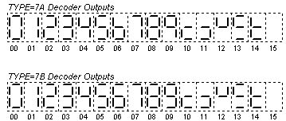

The DECODER primitive models a input-to-output data decoder. The input data is translated in to output data according to the type of decoder specified the TYPE property, as follows:
BINARY |
- |
A single output corresponding to the binary value at the input is asserted |
BCD |
- |
A single output corresponding to the BCD value at the input is asserted. |
7A |
- |
The first seven output bits are set in order to drive a seven-segment LED with the binary input value, higher value outputs remain inactive. The output is compatible with the TTL 74LS247 seven-segment driver (the numbers 6 and 9 have tails), and is illustrated below. Q0 corresponds to the segment 'a' and Q6 to segment 'g'. |
7B |
- |
The
first seven output bits are set in order to drive a seven-segment
LED with the binary input value, higher value outputs remain inactive.
The output is compatible with the TTL 74LS47 seven-segment driver
(the numbers 6 and 9 do not have tails), and is illustrated below.
 |
TABLE |
- |
The input data is translated via a user-defined table look-up. The LENGTH property indicates the size of the table, whilst table entries are defined by the properties with names TABLE0, TABLE1, TABLE2, etc. A table entry not defined is set to the value specified by the DEFAULT property, which itself defaults to zero. The WARN property, if TRUE, causes a warning to be issued (in the simulation log) for any defaulted table entry. |
The EN input has higher priority to the ALL input, and the ALL input has higher priority to the D inputs. Thus:
| Pin | Type | Pin Set | Description |
EN |
Input |
- |
Enable input. |
ALL |
Input |
- |
All outputs active, input. |
D# |
Input |
#1 |
Data input to be decoded. |
Q# |
Output |
#2 |
Data input to be decoded. |
| Time | Type | From/To | Edge | Default | Notes |
| TDLHDQ | Delay |
D#, ALL → Q# | L → H |
0 |
[1] |
| TDHLDQ | Delay |
D#, ALL → Q# | H → L |
0 |
[1] |
| TDLHEQ | Delay |
EN → Q# | L → H |
TDLHDQ | [1] |
| TDHLEQ | Delay |
EN → Q# | H → L |
TDHLDQ | [1] |
| TDLHAQ | Delay |
ALL → Q# | L → H |
TDLHDQ | [1] |
| TDHLAQ | Delay |
ALL → Q# | H → L |
TDHLDQ | [1] |
| TGQ | Glitch |
ANY → Q# |
Pulse |
TDxxCQ | [1] |
| Property | Type | Meaning | Default | Notes |
TYPE |
Text |
Type of decoder. |
BINARY |
[2] |
LENGTH |
Numeric |
Table length. |
16/0 |
[3] |
DEFAULT |
Numeric |
Default table entry value. |
0 |
[4] |
WARN |
Boolean |
Warn of defaulted entries. |
FALSE |
[5] |
TABLEn |
Numeric |
Value of table entry nn. |
DEFAULT |
[6] |
1. The Q outputs have a propagation delay (in order of descending priority) of TDLHEQ/TDHLEQ when there is a transition at the EN input, TDLHAQ/TDHLAQ when there is transition at the ALL input, and TDLHDQ/TDHLDQ for all input transitions.
2. The TYPE property should be assigned one of the following keywords:
BINARY |
Binary input to single output decoder. |
BCD |
BCD input to single output decoder. |
7A |
Binary input to 7-segment LED output decoder, Type A. |
7B |
Binary input to 7-segment LED output decoder, Type B. |
TABLE |
Table decoder. |
3. Where TYPE is assigned TABLE, 7A or 7B, this specifies the number of entries in the table and the default property value is 0, 16 and 16 respectively. Input values that are greater than the value of the LENGTH property are ignored and all outputs will be set inactive.
4. For a TABLE type decoder, table entries not explicitly specified by a TABLEnn property are initialised to the value of this property. See also notes [5] and [6].
5. For a TABLE type decoder, if set TRUE, a warning is entered in to the simulation log for any table entries defaulted to the DEFAULT property value. See also notes [4] and [6].
6. For a TABLE type decoder, the table entries are specified via properties with the names TABLE0, TABLE1, TABLE2, etc. The highest TABLEn property should be equal to the value of the LENGTH property. Any table entry not specified is set to the value of the DEFAULT property, which itself defaults to zero. See also notes [4] and [5].